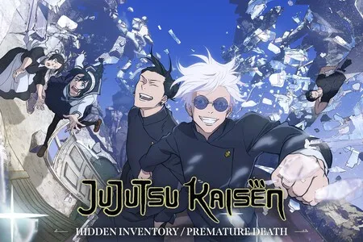

Curiosidades de Jujutsu Kaisen
- Inspiración en el Folclore Japonés: Los conceptos de maldiciones y espíritus malditos en Jujutsu Kaisen están inspirados en el folclore japonés y en yokai (espíritus y demonios), que son comunes en la mitología de Japón.
- Los Ojos Vendados de Gojo: Satoru Gojo usa una venda para cubrir sus ojos debido a su técnica, el "Seis Ojos", que le permite percibir energía maldita en detalle extremo. Aunque la venda limita su vista, Gojo sigue siendo increíblemente poderoso y puede ver incluso mejor que otros hechiceros.
- uji y los Dedos de Sukuna: Para erradicar a Sukuna por completo, Yuji debe consumir sus 20 dedos. Curiosamente, aunque Yuji come estos objetos malditos, no muestra síntomas físicos de daño, lo que sugiere que tiene una resistencia innata a las maldiciones.
- Manga y Anime Éxitos: Jujutsu Kaisen ha alcanzado cifras récord en ventas de manga y en visualización de anime, especialmente después del estreno de la primera temporada y la película Jujutsu Kaisen 0, que cuenta una historia previa sobre Yuta Okkotsu, otro personaje muy poderoso.
